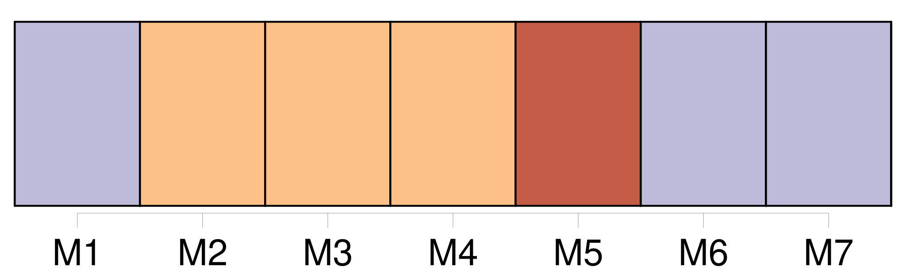

Longueur nb maillons : 10 mentions |
 |
[Ernst] hurlait pour rien ; [il] trépignait, [il] se roulait de colère : [c’] était un enfant nerveux, et Louisa avait recommandé à Christophe de ne pas contrarier [ses] caprices.
Quant à Rodolphe, il était d’ une malice de singe ; il profitait toujours de ce que Christophe avait [Ernst] sur les bras, pour faire derrière son dos toutes les sottises possibles ; il cassait les jouets, renversait l’ eau, salissait sa robe, et faisait tomber les plats, en fouillant dans le placard. [217 phrases]
Mais Christophe se méfiait maintenant ; et il la réservait sur son assiette pour [Ernst] , le petit frère, toujours vorace, [qui] la guettait du coin de l’ œil depuis le commencement du dîner, et [qui] finissait par lui demander :
Donne -la [-moi] , dis, Christophe. |

|
Il est possible de télécharger la ressource sur la page Ortolang |
Si vous avez des questions ou vous voyez des erreurs, merci d'envoyer un mail à silvia.federzoni89@gmail.com |